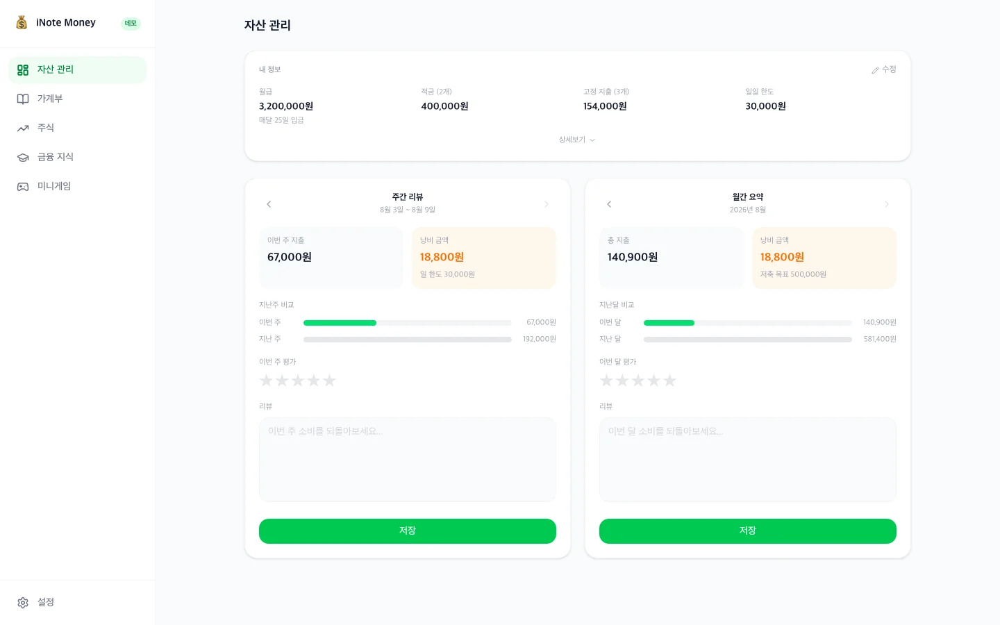
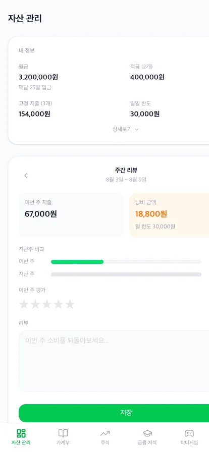
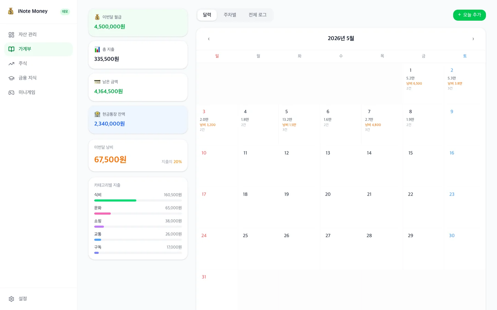
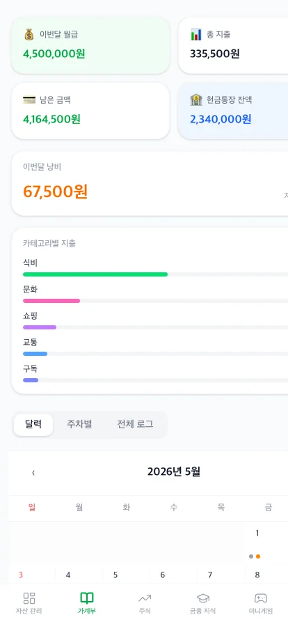

iNote Money
AI와 함께, 혼자서 기획부터 프론트엔드·백엔드까지 만든 가계부·자산관리 서비스입니다.
왜 가계부를 직접 만들었나
몇 년간 손으로 직접 공책에 매일 가계부를 쓰면서 어디서 돈이 낭비되는지 체크해왔습니다. 그러다 보니 자연스럽게 가계부를 넘어 자산관리로 이어졌고, 제 자산이 어떻게 분배돼 있는지, 앞으로 어떻게 해야 할지 계속 생각하며 전략을 짜게 됐습니다. 그 과정을 앱으로 자동화하고, AI가 소비를 추적해서 돈을 덜 쓸 방법을 리뷰해준다면 어떨까 — 그 질문에서 iNote Money를 만들기 시작했습니다.
웹을 넘어서, AI가 탑재되어 자산을 관리해주는 앱을 만드는 것입니다.


자산 관리 대시보드
월급·적금·고정지출 등 내 자산 정보를 등록하면, 주간/월간 지출 합계와 낭비 금액을 자동 계산해 한눈에 보여줘요. 지난 기록과 비교하는 바 차트로 이번 주/이번 달 소비 패턴을 바로 확인할 수 있어요.
AI가 내 자산 흐름을 직접 리뷰하고, 다음 주·다음 달 자산 관리 방향을 먼저 제안해주는 것. 사용자가 숫자를 해석하지 않아도, AI가 "이번 달은 고정비 비중이 높아졌으니 다음 달엔 이렇게 조정해보세요" 같은 식으로 먼저 말을 걸어주는 대시보드.


가계부
달력·주차별·전체 로그 3가지 뷰로 하루하루의 지출을 기록하고, 카테고리별로 분류해 한눈에 확인할 수 있어요. 낭비성 소비인지 표시하고 메모도 남길 수 있어서, 단순 기록을 넘어 소비 습관을 되돌아볼 수 있어요.
사용자가 직접 입력하지 않아도, 결제할 때마다 자동으로 가계부에 등록되는 것. 그리고 AI가 매일 하루치 소비를 리뷰하고, 다음 날 자산 관리 방향을 추천해주는 것. 기록하는 앱이 아니라, 대신 기록하고 먼저 조언해주는 앱이 되는 게 목표예요.
앞으로의 계획
Next
다음 iNote 시리즈 계획을 적어주세요.
Goal
이 앱을 어디까지 발전시키고 싶은지 적어주세요.
Tech
기술적으로 더 해보고 싶은 것을 적어주세요.